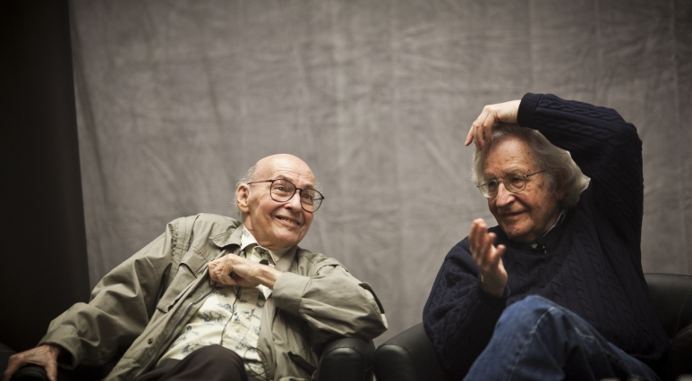
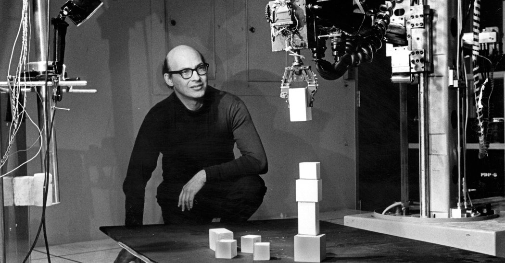

Born to an eye surgeon, Marvin Minsky became THE scientist behind pushing & developing Artificial Intelligence. In 1951 he had became a student of Princeton, and had also built the first neural network. After Achieving a a doctorate in mathematics, he left Princeton University and had returned to Harvard, in which he had already graduated from in 1946 with Mathematics honors.
Marvin Minksey also won the 1969 AM Turing Award, the highest honor in computer science. Later on in 1957, Minsky moved again to MIT, where he had met and worked with fellow AI enthusiast John Mccarthy.

Together, the replicant-loving lab partners founded the Artificial Intelligence, AKA the MIT Computer science & Artificial Intelligence Laboratory.

In 1975, Marvin had invtented “frames.” The idea of very specific, individual moments in a computer program for it to process different possibilities. Marvin Minsky was born in New York in 1927, and died in 2016 in Boston. From 1944 to 1945, Minsky had also served in the U.S. Navy.